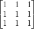
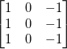
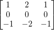
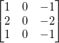

内容 |
Xファンクション specialflt2 は、入力行列に事前に定義したフィルタを適用します。以下のフィルタを利用できます。
この機能を使用するには、
| 入力行列 |
入力データ行列 |
|---|---|
| 出力行列 |
出力行列 |
| 特殊フィルタ |
適用するフィルタ
|
| パディングオプション |
行列境界の外側を埋める方法を指定
|
利用可能なフィルタ
平均フィルタ

水平プレウィットフィルタ
垂直プレウィットフィルタ

水平ソーベルフィルタ

垂直ソーベルフィルタ

ソース行列の端にフィルタを適用すると、境界より外側にフィルタの一部がかかってしまう可能性があります。このような場合、ソース行列の外側を0で埋めたり(ゼロパティング)、内側のセル値を反射させたり(マッピング)、端の値を繰り返す(繰り返しパディング)ことで値を割り当てることができます。